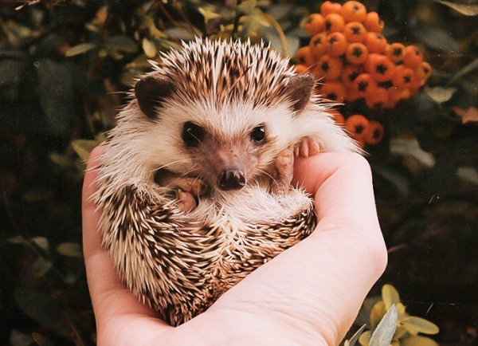

|  |
야생의 고슴도치는?애완용으로 기르는 종은 한국 고슴도치가 아니라 아프리카산의 네발가락고슴도치와 알제리고슴도치의 교배종이다. 고슴도치가 화석으로 처음 등장한 것은 미국 와이오밍 주에서 발견된 것으로 백악기 말이라고 한다. 몸의 길이는 20~30cm, 꼬리의 길이는 3~4cm이며, 다리가 짧다. 주둥이는 돼지처럼 뾰족하고 다리와 꼬리가 짧다. 가장 큰 특징은 털이 변형되어 생긴, 머리 위부터 꽁무니까지 빽빽이 돋쳐 있는 갈색과 흰색의 바늘 같은 가시로, 위협을 느낀 고슴도치는 몸을 웅크려 상대적으로 약한 얼굴과 배 부분을 감추고 가시를 세워 적이 자신을 함부로 건드리지 못하게 하는 것으로 자신을 방어한다. 떨어진 가시 하나를 주워서 찔러보면 풍선도 터뜨린다. 다만, 가시의 끝이 뾰족하긴 해도 전체적으로 말랑말랑하기 때문에 가시를 눕힌다면 크게 위협적이지 않다. 또한 자신의 침을 거품으로 만들어 가시에 바르는데 이에 대해서는 전문가들도 의견이 분분하다. 어떤 이들은 기생충을 죽이기 위하여 그런 행동을 한다고 하고, 또 다른 이들은 가시에 독을 바른다고 하거나, 자신의 냄새를 숨겨서 포식자로부터 숨기 위한 행동이라고 한다. 야생에 사는 한국 토종 고슴도치는 크기도 크고 추위에 강하다. 겨울 동안에는 썩은 나무 틈 같은 곳에서 겨울잠을 자기 때문에, 항시 높은 온도를 유지하지 않아도 된다. |
|---|---|
특별한 애완동물
|
사육시 유의사항은?!고슴도치를 쓰다듬으려면 가시가 난 방향대로 결을 따라 머리에서 엉덩이쪽으로 쓰다듬어야 한다. 물론 일단 고슴도치와 친해져야 하는 건 필수이다. 또한, 깨무는 습관도 있으므로 친해질 때 물리는 건 감수하도록 하자. 일반적인 애완용 품종으로 개량된 고슴도치는 키울때 따뜻한 온도를 유지해줘야 한다. 17도 이하의 온도에 계속 노출되면 저체온증으로 죽게 된다. 야생에서는 추위에 강한 국내종 고슴도치라도, 집안에서만 길렸으면 겨울잠은 위험하다. 사료만 먹이다 보니 살이 찌지 않은 상태여서 겨울잠 자다 굶어 죽을 수 있다고 한다. 고슴도치를 씻기기 위해서 물에 넣을 때는 다리까지만 올라오도록 물을 넣어야 한다. 왜냐면 고슴도치 귀에 물이 들어가면 안 되기 때문이다. 생후 3~4개월이 지나면 길들이기가 힘들다. 대략 2주 이후로는 건사료에 관심을 보이는데, 사료를 주기 시작할 때가 핸들링의 최적기이다. 애완 고슴도치가 가장 잘 걸리는 병 중에서도 치사율이 100%로 매우 치명적인 WHS(Wobbly Hedgehog Syndrome)라는 것이 있다. 이 병은 애완 고슴도치에게만 발생하는데, 그 이유는 명확하지 않다. 야생 고슴도치에겐 WHS가 발생하지 않는다. 아직 치료법은 없고, 일반적인 예방법은 평소 비타민이 부족하지 않게 먹이는 것이다. |
애완 고슴도치의 특징!애완용 고슴도치는 키우는 게 어렵지 않은데, 일단 극히 조용하고 먹는 양에 비해 싸는 양도 적절하다. 그리고 손이 많이 안 가는 편으로, 목욕도 많아봐야 2주일에 한 번, 보통은 1달에 한 번쯤 시켜줘도 문제 없다. 오히려 많이 시키면 습진에 걸릴 수도 있으므로 주의. 또한 얘들은 독립생활을 하는데 그게 독립생활을 버틸 수 있는 정도가 아니라 즐긴다! 냄새도 고슴도치의 장점이다. 고슴도치는 '취선'이 없어 냄새에서 자유롭다. 물론 똥오줌 냄새는 있으므로, 변냄새 감소효과가 있는 사료를 신경써서 고르고 청소를 잘 해주면 된다. 고슴도치는 감정 표현이 시각적으로도, 청각적으로도 아주 확실해서 이것 또한 장점이라면 장점이다. 아무리 고슴도치를 처음 보는 사람이라도 고슴도치가 가시를 빳빳히 세우고 있다면 딱 봐도 불안하거나, 겁을 먹었거나, 화났다는 사실을 알 수 있다. 좀 더 정확하게는 평소 편안한 상태에서는 가시가 마치 헤어젤을 발른 듯이 결을 따라(엉덩이 쪽을 따라) 누워 있다. 이 때는 결을 따라 고슴도치를 쓰다듬어 주면 고슴도치가 좋아하며 사람은 가시에 찔리지 않는다. 다만, 머리와 엉덩이를 만지는건 극히 싫어하므로 주의하자. 여기서 주위가 낯선 환경이 되거나 조금 긴장한 상태가 되면 점점 가시가 서기 시작한다. 이때는 가시를 세운 상태에서 주위를 탐색하기 위해 자세를 낮추고 걸어다니기도 한다. 혹은 정체를 모르거나 호기심이 가는 물체를 발견하면 가시를 조금 세우고 천천히 다가가서 냄새를 맡거나 물체를 씹어보는 모습을 보인다. 이때는 신기하게 자신이 호기심을 가진 물체 방향으로 가시가 서는 것을 관찰할 수 있다. |
|